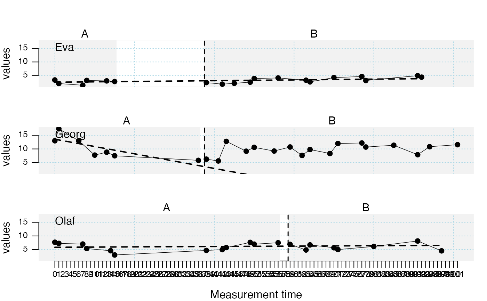
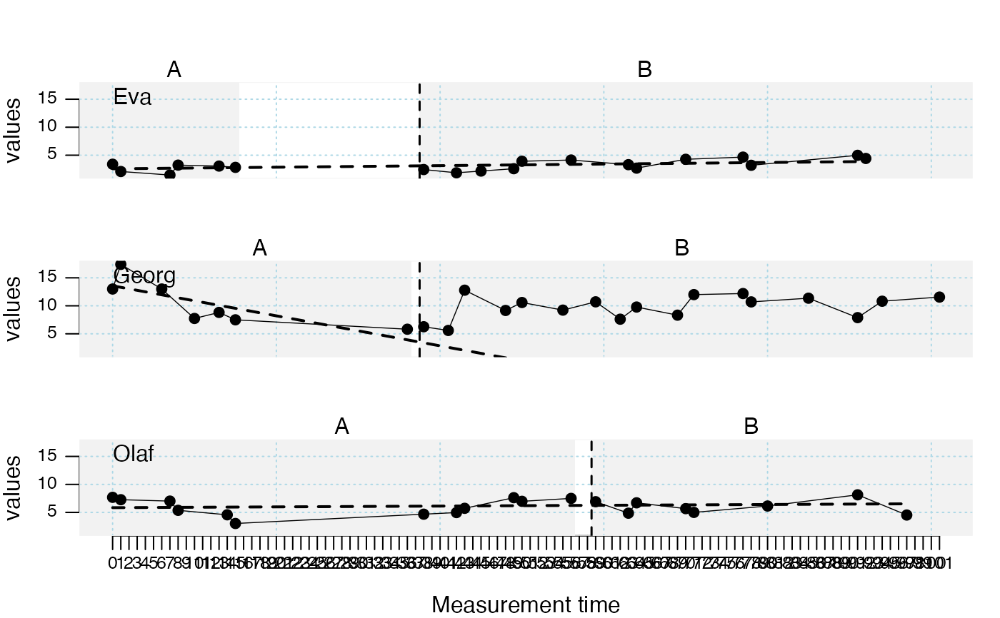
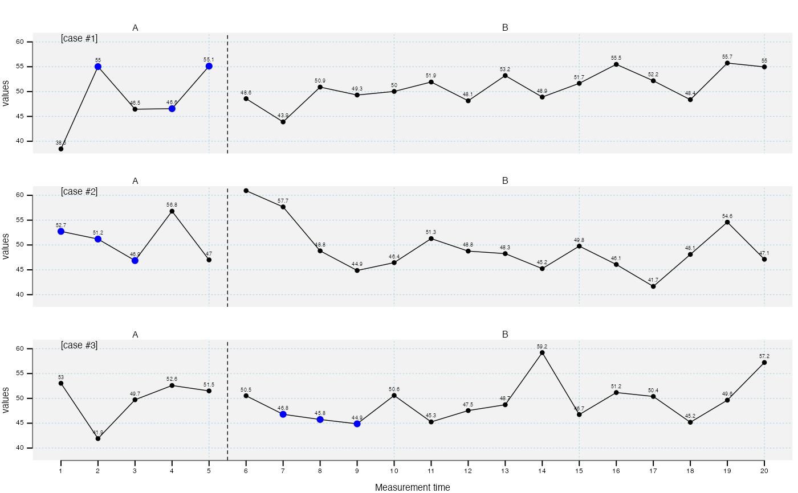
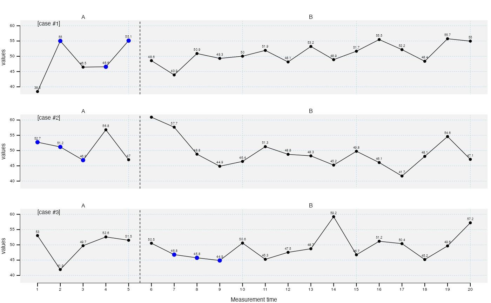

This function provides a plot of a single-case or multiple single-cases.
Arguments
- ...
Further arguments passed to the plot command.
- data
A single-case data frame. See
scdf()to learn about this format.- dvar
Character string with the name of the dependent variable. Defaults to the attributes in the scdf file.
- pvar
Character string with the name of the phase variable. Defaults to the attributes in the scdf file.
- mvar
Character string with the name of the measurement time variable. Defaults to the attributes in the scdf file.
- ylim
Lower and upper limits of the y-axis (e.g.,
ylim = c(0, 20)sets the y-axis to a scale from 0 to 20). With multiple single-cases you can useylim = c(0, NA)to scale the y-axis from 0 to the maximum of each case.ylimis not set by default, which makesscanset a proper scale based on the given data.- xlim
Lower and upper limits of the x-axis (e.g.,
xlim = c(0, 20)sets the x-axis to a scale from 0 to 20). With multiple single-cases you can useylim = c(0, NA)to scale the x-axis from 0 to the maximum of each case.xlimis not set by default, which makesscanset a proper scale based on the given data.- xinc
An integer. Increment of the x-axis. 1 :each mt value will be printed, 2 : every other value, 3 : every third values etc.
- lines
A list defining one or multiple lines or curves to be plotted. The argument is passed as a list (e.g.,
list(type = "median")). Some of the procedures can be refined with an additional argument (e.g.,lines = list(type = "mean", trim = 0.2)adds a 20\ line. For multiple lines, provide a list element for each line (e.g.,list( list(type = "median", col = "red"), list(type = "trend", col = "blue")). Possible lines are:"median"Separate lines for phase A and B medians."mean"Separate lines for phase A and B means. By default it is 10\lines = list(type = "mean", trim = 0.2)draws a 20\"trend"Separate lines for phase A and B trends."trendA"OLS trend line for phase A, extrapolated throughout phase B."trendA_bisplit"Split middle (bi-split) trend line for phase A, extrapolated throughout phase B."trendA_trisplit"Tukey tri-split trend line for phase A, extrapolated throughout phase B."maxA/minA"Line at the level of the highest or lowest phase A score."medianA"Line at the phase A median score."meanA"Line at the phase A 10\ using the additional argument (e.g.,lines = list(type = "meanA", trim = 0.2))."plm"Regression lines for piecewise linear regression model."plm.ar"Regression lines for piecewise autoregression model. The lag is specified like this:lines = list(type = "plm.ar", ar = 2). Default lag is set to 2."movingMean"Draws a moving mean curve, with a specified lag:lines = list(type = "movingMean", lag = 2). Default is a lag 1 curve."movingMedian"Draws a moving median curve, with a specified lag:lines = list(type = "movingMedian", lag = 3). Default is a lag 1 curve."loreg"Draws a non-parametric local regression line. The proportion of data influencing each data point can be specified usinglines = list(type = "loreg"m f = 0.66). The default is 0.5."lty"Use this argument to define the line type. Examples are:"solid","dashed","dotted"."lwd"Use this argument to define the line's thickness, e.g.,lwd = 4."col"Use this argument to define the line's color, e.g.,col = "red".
- marks
A list of parameters defining markings of certain data points.
"positions"A vector or a list of vectors indicating measurement-times to be highlighted. In case of a vector, the marked measurement-times are the same for all plotted cases. In case of a list of vectors, marks are set differently for each case. The list must have the same length as there are cases in the data file."col"Color of the marks."cex"Size of the marks.
Use for example
marks = list(positions = c(1, 8, 15), col = "red", cex = 3)to make the MTs one, eight and 18 appear big and red.- phase.names
By default phases are labeled based on the levels of the phase variable. Use this argument to specify different labels:
phase.names = c("Baseline", "Intervention").- xlab
The label of the x-axis. Default is
xlab = "Measurement time".- ylab
The labels of the y-axis. Default is
ylab = "Score".- main
Main title of the plot.
- case.names
Case names. If not provided, names are taken from the scdf. Set
case.names = ""if you don't like to include case names.- style
Either a character with the name of a pre-implemented style or a style object. See
style_plotto learn about this format.
Examples
## Request the default plot of the data from Borckhardt (2014)
plot(Borckardt2014)
 ## Plot the three cases from Grosche (2011) and visualize the phase A trend
plot(Grosche2011, style = "grid", lines = "trendA")

## Request the local regression line for Georg from that data set and customize the plot
plot(Grosche2011$Georg, style = "sienna", ylim = c(0,NA),
xlab = "Training session", ylab = "Words per minute",
phase.names = c("Baseline", "Intervention"), xinc = 5,
lines = list(type = "loreg", f = 0.2, lty = "solid", col = "black", lwd = 3))
## Plot the three cases from Grosche (2011) and visualize the phase A trend
plot(Grosche2011, style = "grid", lines = "trendA")

## Request the local regression line for Georg from that data set and customize the plot
plot(Grosche2011$Georg, style = "sienna", ylim = c(0,NA),
xlab = "Training session", ylab = "Words per minute",
phase.names = c("Baseline", "Intervention"), xinc = 5,
lines = list(type = "loreg", f = 0.2, lty = "solid", col = "black", lwd = 3))
 ## Plot a random MBD over three cases and mark interesting MTs
dat <- random_scdf(design = design(3))
plot(dat, marks = list(positions = list(c(2,4,5),c(1,2,3),c(7,8,9)), col = "blue",
cex = 1.4), style = c("grid", "annotate", "tiny"))

## Plot a random MBD over three cases and mark interesting MTs
dat <- random_scdf(design = design(3))
plot(dat, marks = list(positions = list(c(2,4,5),c(1,2,3),c(7,8,9)), col = "blue",
cex = 1.4), style = c("grid", "annotate", "tiny"))
